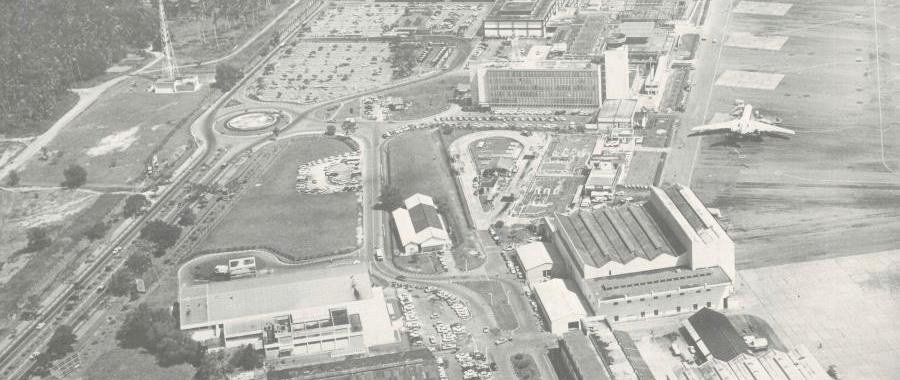
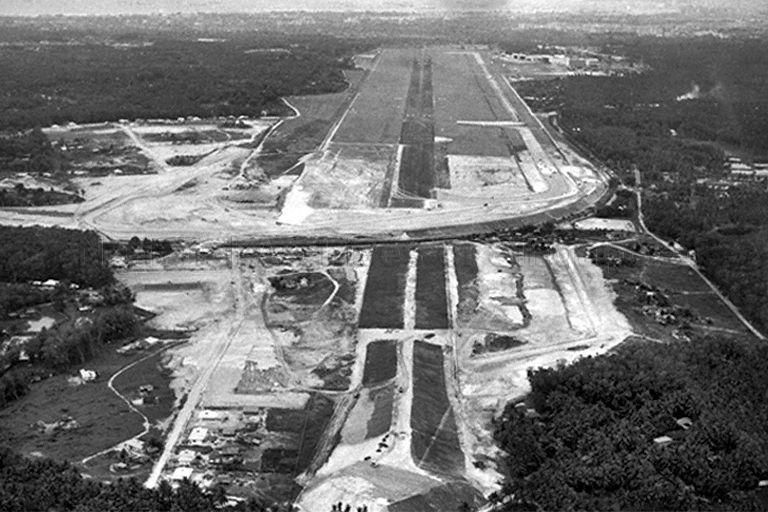
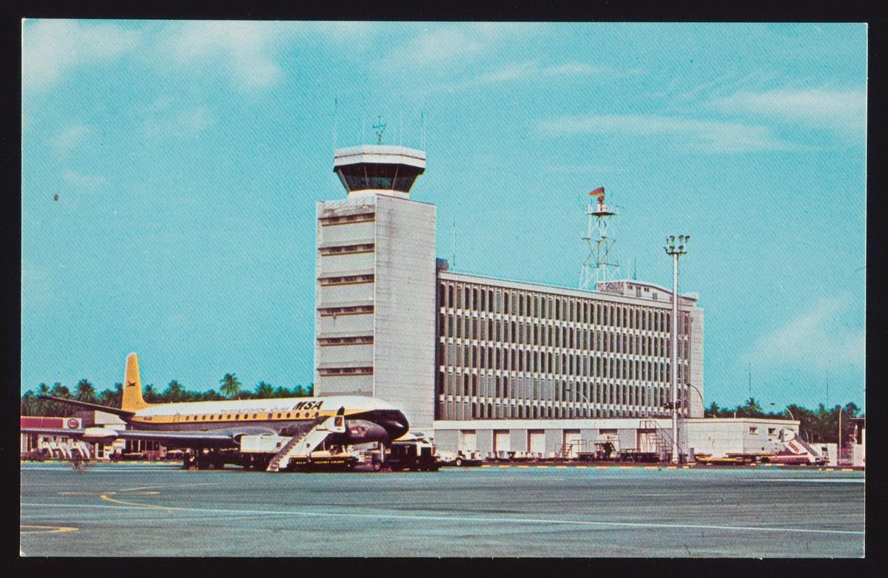
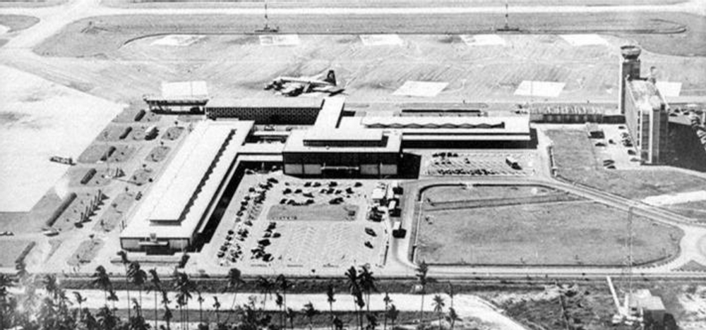
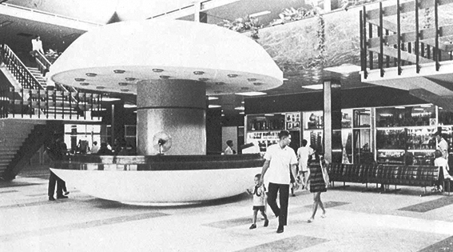
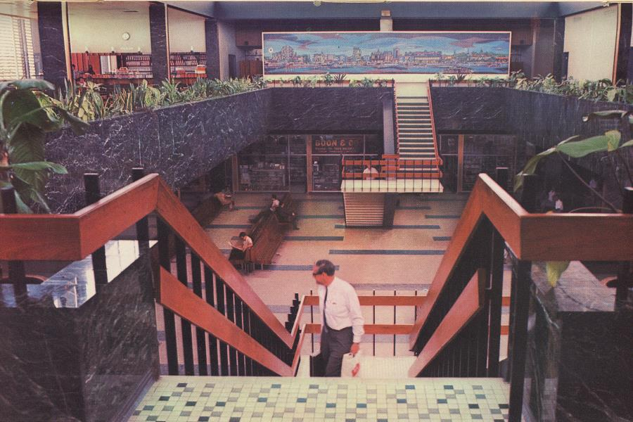
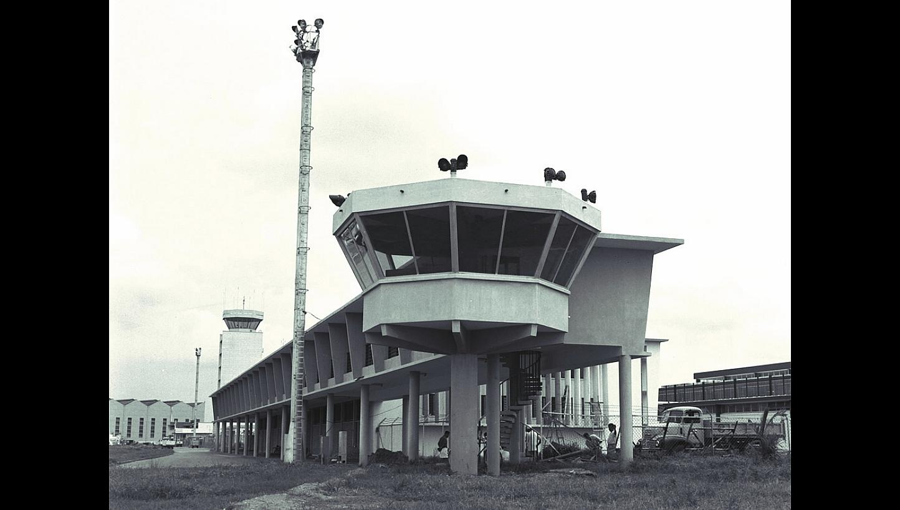

Paya Lebar Airport

On 20 August 1955, the Paya Lebar International Airport was officially opened by the British Secretary of State for the Colonies, Alan Lennox-Boyd. It replaced the Kallang International Airport as Singapore’s main commercial airport. This led to a rapid expansion of air travel in the 1960s and 1970s. Extensions for the airport were built in response to the increase in the volume of passenger traffic. However, in 1971 and 1978, the airport was unable to cope with the high capacity. Changi Airport would eventually become the plan for a new commercial airport in 1981.

Aerial View of Land Required To North Of Airport in 1960 from the Civil Aviation Authority Of Singapore Collection, Courtesy of National Archives of Singapore

Many buildings of the former Paya Lebar Airport commercial airport like the passenger terminal building, control tower block and some aircraft hangars still remain till this day.

The consolidation and reclamation of the land was completed in mid-1936, and construction for the airport buildings started. On 12 June 1937, the new airport was officially announced open by the Governor of Singapore, Sir Shenton Tomas. Planes were brought over the waterfront via the air corridor to Kallang.

By 1960, Paya Lebar Airport was handling more than 300,000 passengers and 30,000 aircraft movements a year. It welcomes 11 airlines operating 125 weekly flights. Visitor arrivals to Singapore hit 100,000. The photograph displays what is referred to today as the ‘mushroom counter’.

The interior of the terminal building lobby, and the architecture of the terminal building has been kept till today.

The rooftop viewing gallery was also popular with visitors, and included a restaurant decorated with a mosaic mural depicting local life.